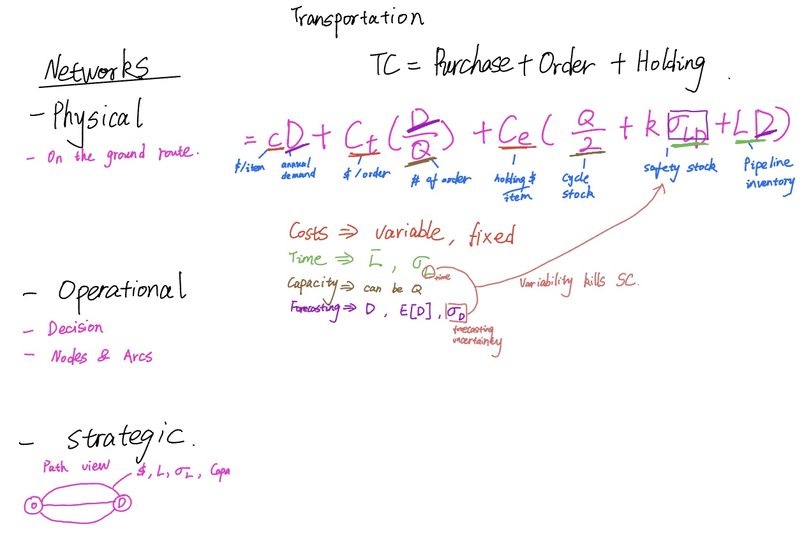

SC1X: Supply Chain Fundamentals

This course is a survey of the fundamental analytic tools, approaches, and techniques used in the design and operation of logistics systems and integrated supply chains. The material is taught from a managerial perspective, with an emphasis on where and how specific tools can be used to improve the overall performance and reduce the total cost of a supply chain. We place a strong emphasis on the development and use of fundamental models to illustrate the underlying concepts involved in both intra- and inter-company logistics operations.
The three main topic areas we will focus on are: Demand Forecasting, Inventory Management, and Transportation Planning. While our main objective is to develop and use models to help us analyze these situations, we will make heavy use of examples from industry to provide illustrations of the concepts in practice. This is neither a purely theoretical nor a case study course, but rather an analytical course that addresses real problems found in practice.
Forecasting
1. Time Series Analysis & Exponential Smoothing.
2. Exponential Smoothing with Seasonality.
3. Forecasting for Special Cases.
Inventory
1. EOQ Model and Variety in Assumptions.
2. Stochastic Demand and Single Period Inventory Model.
3. Continuous Vs. Periodic Review Policies.
4. Warehouse Fundamentals.
Transportation
1. Fundamentals of Freight Transportation.
2. Lead Time Variability & Mode Selection.
3. Freight Transportation Analysis.
